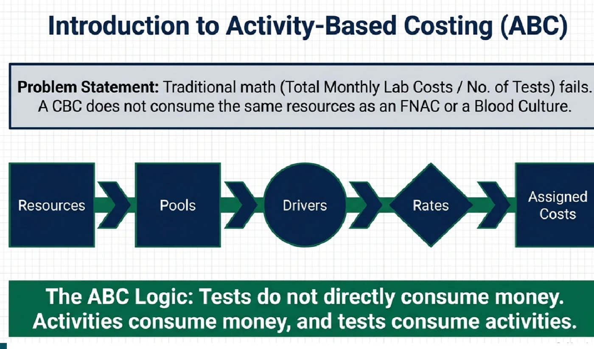
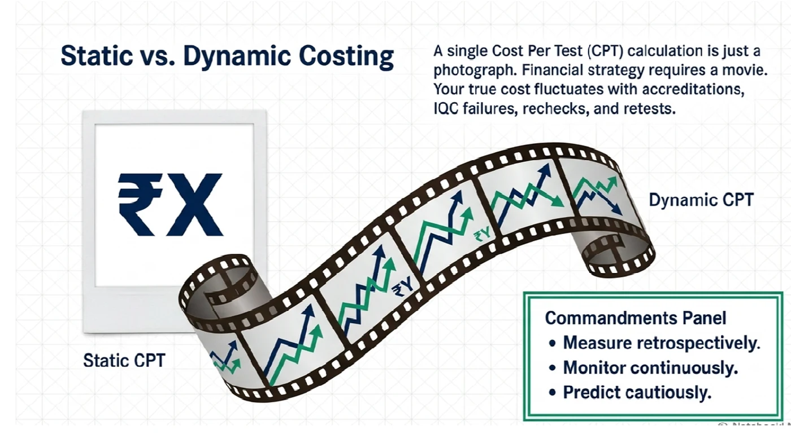
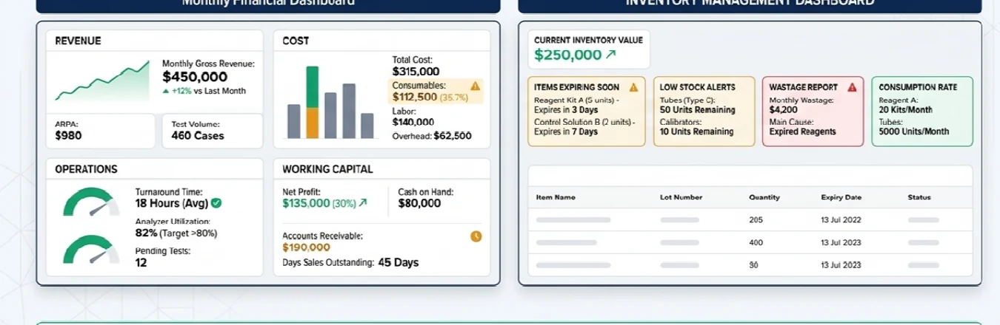
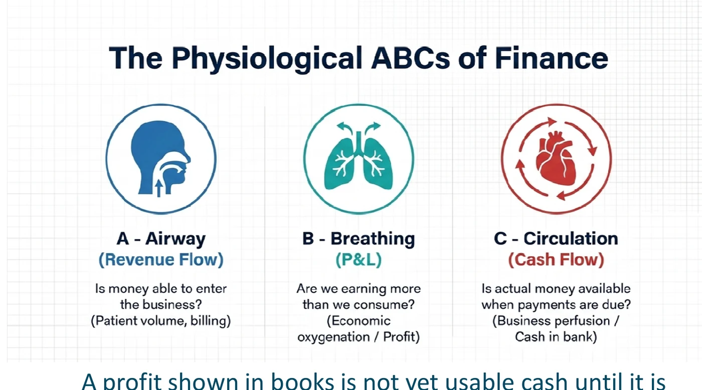
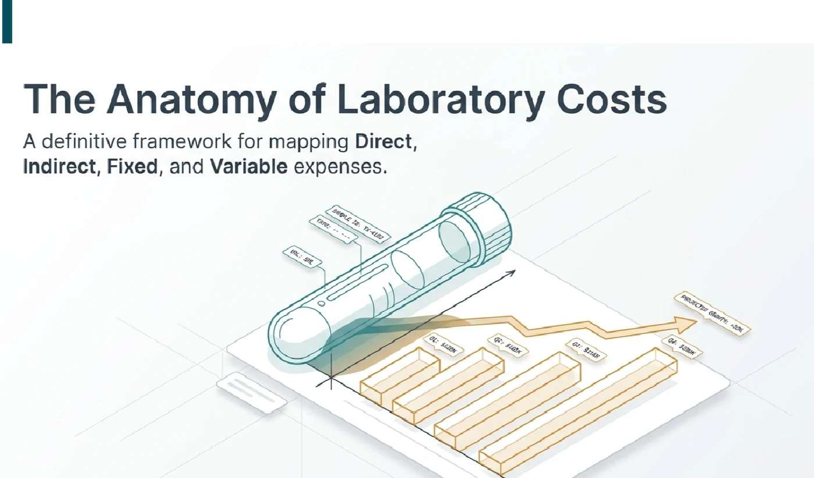

A disclaimer
I am a pathologist and laboratory owner, not a chartered accountant, financial adviser or economist.
This article is not intended to be a financial paper, accounting reference or prescriptive financial advice. It represents my personal understanding and opinion developed while trying to apply basic financial concepts to the practical running of an independent diagnostic laboratory.
It should therefore be read as one laboratory owner speaking to other laboratory owners—not as financial gospel.
Are cheaper reagents really the big-lab advantage?
Published financial statements of major diagnostic companies provide an interesting reality check.
In the examples reviewed for the presentation, consumables and reagents accounted for approximately 20.1% of revenue at Metropolis, 26.5% at Thyrocare and 19.3% at Dr Lal PathLabs.
The exact percentages will vary between companies and years, but the larger point is more important:
A substantial majority of laboratory revenue is affected by things other than reagents.
Those include manpower, rent, infrastructure, information technology, logistics, maintenance, quality systems, depreciation, customer acquisition, administration, financing, utilisation and operating efficiency.
So even if an independent laboratory receives exactly the same reagent price as a large chain tomorrow, it has not automatically acquired the economics of that chain.
A cheaper reagent can improve margins.
It cannot repair poor utilisation, excessive manpower, weak collections, long receivable cycles, wastage, overstocking, low revenue per accession or inefficient processes.
Reagent price is part of laboratory economics. It is not laboratory economics.
We measure everything clinically. Why not financially?
A pathologist may review IQC every day and EQAS every month.
We understand CV, SD, bias, sensitivity, specificity and allowable error.
If a control shifts by two standard deviations, somebody notices.
Yet the financial performance of the same laboratory may be examined only when annual accounts are prepared.
That is a strange mismatch.
The objective is not to turn every pathologist into an accountant. The objective is to understand enough financial language to recognise when the laboratory is moving in the wrong direction.
A small financial vocabulary every lab owner should know
Enough financial language to recognise when the laboratory is moving in the wrong direction.
Revenue
Revenue is the income generated from laboratory operations.
It tells us how large the business is.
It does not tell us whether the laboratory makes money.
A ₹20-crore laboratory can be financially weaker than a ₹5-crore laboratory if its costs, debt and collections are poorly controlled.
EBITDA
Earnings Before Interest, Tax, Depreciation and Amortisation.
In practical terms, EBITDA gives us a broad picture of how effectively the core operating business is performing before financing costs, taxation and certain accounting charges.
For a laboratory owner, it answers something close to: “How much is the operating business actually earning from running the laboratory?”
Revenue growth accompanied by deteriorating EBITDA may mean the laboratory is becoming bigger without becoming better.
PBT — Profit Before Tax
PBT is the profit remaining after operating expenses, depreciation and financing costs but before income tax.
PAT — Profit After Tax
PAT is the final accounting profit after expenses and taxes.
It is useful, but PAT should not be confused with the amount of cash available in the bank.
ARPA — Average Revenue per Accession
If a laboratory generates ₹1 crore from 10,000 accessions, its ARPA is ₹1,000.
Another laboratory may process the same number of accessions but earn ₹500 per accession.
Their sample volumes look identical. Their economics are completely different.
This is why patient numbers alone can be misleading.
Revenue per Staff
It does not mean that manpower should be blindly reduced.
Laboratories are healthcare organisations and appropriate staffing is essential to quality.
But if employee numbers increase 25% while revenue rises only 5%, the ratio helps identify a potential productivity problem.
Profit per Accession
How much does the average accession ultimately contribute after the costs required to service it?
This can be far more informative than looking only at overall profit.
A laboratory may discover that certain customer groups, packages or channels generate impressive revenue while contributing very little profit.
Customer Acquisition Cost — CAC
What does it cost to acquire a new customer?
That may include sales manpower, advertising, digital marketing, referral expenditure, promotions, discounts, collection-centre incentives and other acquisition expenses.
The number becomes especially meaningful when considered alongside repeat business.
Customer Lifetime Value
How much economic value does a patient or client contribute during the entire relationship with the laboratory?
A ₹500 acquisition cost may be unreasonable for a one-time ₹600 transaction. The same ₹500 can be extremely attractive if that patient generates ₹10,000 of business over several years.
Independent laboratories can have an important advantage here because trust and relationships can create repeat business at relatively low acquisition cost.
Inventory Days
Approximately how many days current reagent inventory will last at the present consumption rate.
Too much inventory means money sitting on shelves and greater expiry risk. Too little inventory increases the risk of stock-outs.
Receivable Days
How long does the laboratory take to receive money after generating a bill?
Revenue earned today but collected four months later has a cost attached to it.
The overlooked number: Non-Consumable Cost
We generally know, or at least attempt to know, what a TSH reagent costs.
But what does it cost the laboratory simply to exist and service a patient?
Think about reception, phlebotomy, billing, customer care, IT, LIS, HR, housekeeping, accreditation, quality systems, transport, maintenance, rent, electricity, management, depreciation, support manpower, finance costs and infrastructure.
For clarity, I prefer calling the broad management metric Non-Consumable Cost.
Suppose your laboratory has ARPA of ₹1,000 and Non-Consumable Cost per accession of ₹650.
Before the test-specific reagent has been consumed, ₹650 of every ₹1,000 has already been absorbed by the organisation required to produce and deliver that accession.
Only ₹350 remains for reagents, consumables, outsourced testing and profit.
Now imagine offering a package for ₹600 because the reagent cost appears to be only ₹150. At first sight, ₹600 – ₹150 = ₹450. That appears comfortable.
But this calculation ignores the organisation.
Once the Non-Consumable Cost required to service the accession is considered, the apparent profit can disappear.
If average revenue per accession is below the organisation’s Non-Consumable Cost per accession, changing CPT or CPRT cannot, by itself, repair the economics.
That does not mean reagent cost is irrelevant. It means we should solve the larger equation before celebrating a small improvement in one variable.
Activity Based Costing: how does a test really consume money?
One of the most useful ideas in laboratory costing is Activity Based Costing, or ABC.
Tests do not directly consume money. Activities consume resources, and tests consume activities.

Before a report reaches the patient, the laboratory may need to receive a call, register the patient, arrange home collection, perform phlebotomy, print and attach barcodes, transport the sample, accession it, centrifuge it, aliquot it, load it on an analyser, perform calibration and IQC, process the test, repeat or rerun if required, validate the result, medically authorise it, communicate critical values, dispatch the report, reconcile billing and collect payment.
Every activity consumes resources. Those resources have costs.
Resources include reagents, controls, calibrators, consumables, technicians, pathologists, instruments, AMC/CMC, electricity, rent, LIS, quality systems, administration, transport and customer service.
Activities include registration, phlebotomy, accessioning, centrifugation, aliquoting, analyser loading, calibration, QC, manual processing, validation, reporting, critical-value calling, report dispatch and billing reconciliation.
Cost objects can include an individual test, a reportable result, a patient order, a histopathology case, a home collection, a hospital client, a department or a collection centre.
This is why costing a laboratory purely from reagent prices can be misleading.
Now we can discuss CPT and CPRT
CPT — Cost per Test — represents the cost associated with performing one test, although the exact definition depends on whether one includes only reagent cost or a broader allocation of direct and indirect costs.
CPRT — Cost per Reportable Test — attempts to move closer to reality because not every reaction, calibration, control, repeat or consumed unit produces a patient-reportable result.
CPRT is not a universal constant.
It varies with laboratory volume, test frequency, reagent pack size, calibration frequency, QC frequency, accreditation requirements, reagent stability, failed IQC, reruns, repeats, dead volume, reagent wastage, expiries, instrument utilisation and lot changes.
Two laboratories can use the same analyser, the same reagent, the same pack size and the same purchase price and still have very different real CPRTs.
The question should therefore not merely be: “What CPT is the company quoting?” It should be: “What is my laboratory actually achieving?”

The real foundation of reagent optimisation: inventory
To calculate real consumption, one first needs to know what was actually consumed.
Imagine purchasing ₹10 lakh of reagents in June. Did the laboratory consume ₹10 lakh in June? Not necessarily.
Some June purchases may remain in inventory. Some May purchases may be consumed in June. Some reagent may expire, be transferred, damaged or wasted.
This is why a meaningful financial dashboard should be based, as far as practical, on reagent consumption rather than merely reagent purchase.
A useful inventory system should help answer: What entered the laboratory? When did it enter? Which lot? What was consumed? By which department? What remains? What expired? What was wasted? What was transferred? What was lost to QC or calibration?
Without reliable answers, a sophisticated CPRT calculation may only produce a sophisticated estimate.
Expiry is not merely a stock problem
Expired reagents are usually discussed as an inventory failure. Economically, they are also a CPRT problem.
If a reagent costing ₹20,000 is expected to produce 100 patient results but only 70 are actually reported before the remainder expires, the cost of those unused tests does not disappear.
It has effectively been loaded onto the 70 reportable results.
Low-volume laboratories therefore sometimes face an unavoidable disadvantage with large reagent pack sizes.
In such circumstances, the lowest quoted per-test reagent price may not actually produce the lowest real CPRT.
Smaller packs at a nominally higher unit price may sometimes prove economically superior if they substantially reduce wastage.
The financial dashboard: the IQC of the business
The objective of a dashboard is not to generate another 15-page spreadsheet nobody reads.
A good dashboard should allow a laboratory owner to recognise deterioration early.
Revenue & Growth
Revenue and Growth: total revenue, accession volume, ARPA, department-wise revenue, test mix, revenue per staff and revenue growth.
Cost & Profitability
Cost and Profitability: reagent consumption, Non-Consumable Cost, Non-Consumable Cost per accession, selected CPT/CPRT, EBITDA, Profit per Accession and net realisation.
Operations & Productivity
Operations and Productivity: tests per accession, test-to-tube ratio, analyser utilisation, department productivity, revenue per staff and pathologist workload where relevant.
Working Capital
Working Capital: inventory days, receivable days, major outstanding debtors, creditors, and cash and bank position.

Profit is not cash
Suppose a hospital owes your laboratory ₹25 lakh.
The revenue may already appear in the accounts. The P&L may show a profit.
But the supplier still wants payment. Salaries still have to be paid. Rent still falls due.
A profit shown in books is not yet usable cash until it is collected and available after liabilities.

Now consider the timing problem. The vendor may expect payment in 30 days while the customer may pay in 90 or 120 days.
Someone has to finance that gap, and usually that someone is the laboratory.
This means the profitability of a client should not be judged merely from the billed rate. Credit terms matter.
A ₹10-lakh client is not always a ₹10-lakh client
Consider two clients.
Client A: monthly revenue ₹10 lakh; payment in 15 days.
Client B: monthly revenue ₹10 lakh; payment in 120 days.
On the revenue dashboard they appear identical. Financially they are not.
Client B ties up considerably more working capital and introduces financing cost, collection effort, delayed-payment risk, default risk and opportunity cost.
This is why receivable days should sit alongside revenue on the financial dashboard.
Growth can hide inefficiency
Revenue growth feels good. Increasing patient volume feels good. Opening another collection centre feels like progress. Hiring more staff feels like expansion.
But growth can hide worsening economics.
Suppose revenue rises from ₹1 crore to ₹1.2 crore. That looks like 20% growth.
But if manpower rises 30%, rent increases, discounts rise and receivable days double, the business may actually have become weaker.
This is why absolute numbers should be paired with ratios such as Revenue per Staff, ARPA, Non-Consumable Cost per accession, EBITDA margin, Receivable Days, Inventory Days and Profit per Accession.
These tell us whether growth is improving the laboratory—or merely enlarging it.
Customer acquisition matters too
Laboratory economics does not end when a sample enters the analyser.
How did the patient reach the laboratory? What did acquiring that patient cost?
If a laboratory spends heavily on discounts, online advertising or acquisition channels to generate a one-time low-value transaction, apparent revenue growth may have poor economics.
Conversely, a trusted independent laboratory may acquire a patient once and retain that relationship for years.
This is why CAC and Customer Lifetime Value belong together.
Independent laboratories may not always win the battle for the cheapest advertised test, but they may be able to win on trust, convenience, continuity, local presence, service, medical interaction and repeat utilisation.
Cost classification still matters
Laboratory costs behave differently.

Direct
Direct costs can be linked directly to a test or service: reagent, specific consumable, outsourced test charge, IHC antibody, culture bottle or molecular cartridge.
Indirect
Indirect costs support multiple activities: reception, IT, HR, housekeeping, accreditation and management.
Variable
Variable costs broadly rise with activity: reagents, tubes, outsourcing, collection consumables and courier per pickup.
Fixed / relatively fixed
Fixed or relatively fixed costs do not immediately change with small fluctuations in volume: rent, salaried manpower, depreciation, AMC and LIS subscription.
This matters because additional volume behaves differently depending on whether existing fixed capacity has already been paid for.
Equipment decisions should also be viewed financially
Laboratory owners naturally focus on analyser specifications: throughput, menu, precision, reagent stability, service and footprint.
But acquisition structure also matters.
A reagent-rental agreement, outright purchase, deferred-payment arrangement and financed equipment purchase each distribute cost differently.
The correct choice depends on expected test volume, reagent commitment, utilisation, useful life, cost of capital, maintenance liability, technology-obsolescence risk and cash position.
The machine should therefore not be assessed only as an instrument. It is also a financial commitment.
What should an independent laboratory owner know every month?
If I had to reduce the entire financial microscope to one monthly page, I would want the following numbers visible:
- Revenue
- Number of accessions
- ARPA
- Consumable/reagent consumption
- Non-Consumable Cost
- Non-Consumable Cost per accession
- EBITDA and EBITDA margin
- Profit per Accession
- Revenue per Staff
- Actual CPRT of major tests
- Inventory Days
- Expired/wasted reagent value
- Receivable Days
- Cash and bank balance
- Customer Acquisition Cost where measurable
- Repeat business / Customer Lifetime Value where measurable
You do not need perfection on Day 1. Measurement itself changes behaviour.
CPT is still important—just not first
None of this is an argument against reagent negotiation.
Quite the opposite.
Once the broader financial picture is understood, reagent negotiation becomes more intelligent.
Now you know which tests deserve attention, where utilisation is poor, which packs are expiring, where reruns are high, whether reagent-rental commitments make sense, whether QC consumption is appropriate, which parameters have unexpectedly high CPRT and whether switching vendors will genuinely change the economics.
You stop negotiating simply because “the other lab gets it cheaper.”
You start negotiating because your own data shows exactly where value can be created.
That is a far stronger position.
Financial sustainability protects laboratory quality
There is sometimes an uncomfortable assumption in healthcare that discussing profit somehow conflicts with patient care.
I disagree.
A financially sustainable laboratory can invest in better analysers, stronger internal QC, EQAS, accreditation, staff training, competent manpower, IT systems, backup equipment, biosafety, better sample transport, patient service, faster turnaround time and innovation.
A laboratory that chronically loses money eventually has fewer choices.
Financial discipline therefore does not have to dilute quality. It can protect quality.
The challenge is not to maximise profit at the expense of the patient. The challenge is to ensure that good laboratory medicine remains economically sustainable.
Put the whole laboratory under the microscope
Pathologists are trained to look beyond the obvious.
A raised enzyme is interpreted in context. A suspicious cell is examined against its architecture. An abnormal result is correlated clinically.
We should apply the same thinking to our businesses.
A reagent price is one number. CPT is one number. CPRT is one number.
But the economics of an independent laboratory are the combined result of price + volume + utilisation + people + infrastructure + process + inventory + customer economics + working capital + cash flow.
That is the financial microscope.
So yes: negotiate reagent prices. Reduce wastage. Improve pack utilisation. Calculate CPT. Calculate CPRT.
But before concluding that the large chain’s advantage lies inside the reagent box, look at everything outside it.
Know your ARPA. Know your Non-Consumable Cost. Know your EBITDA. Know your Revenue per Staff. Know your inventory. Know your receivables. And know where the cash actually is.
Revenue tells us how big the laboratory is.
Margins tell us how well it runs.
Cash flow tells us whether it survives.
And sustainable profit gives us the ability to keep investing in the quality our patients expect.